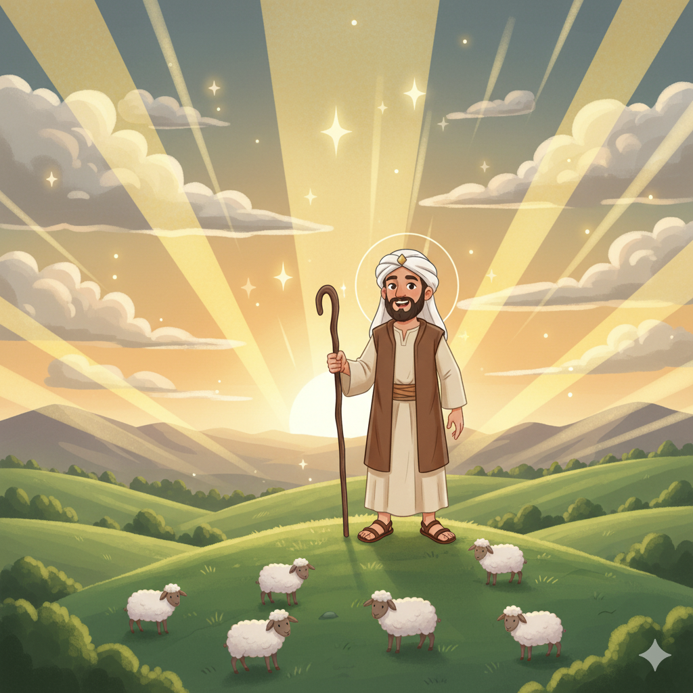
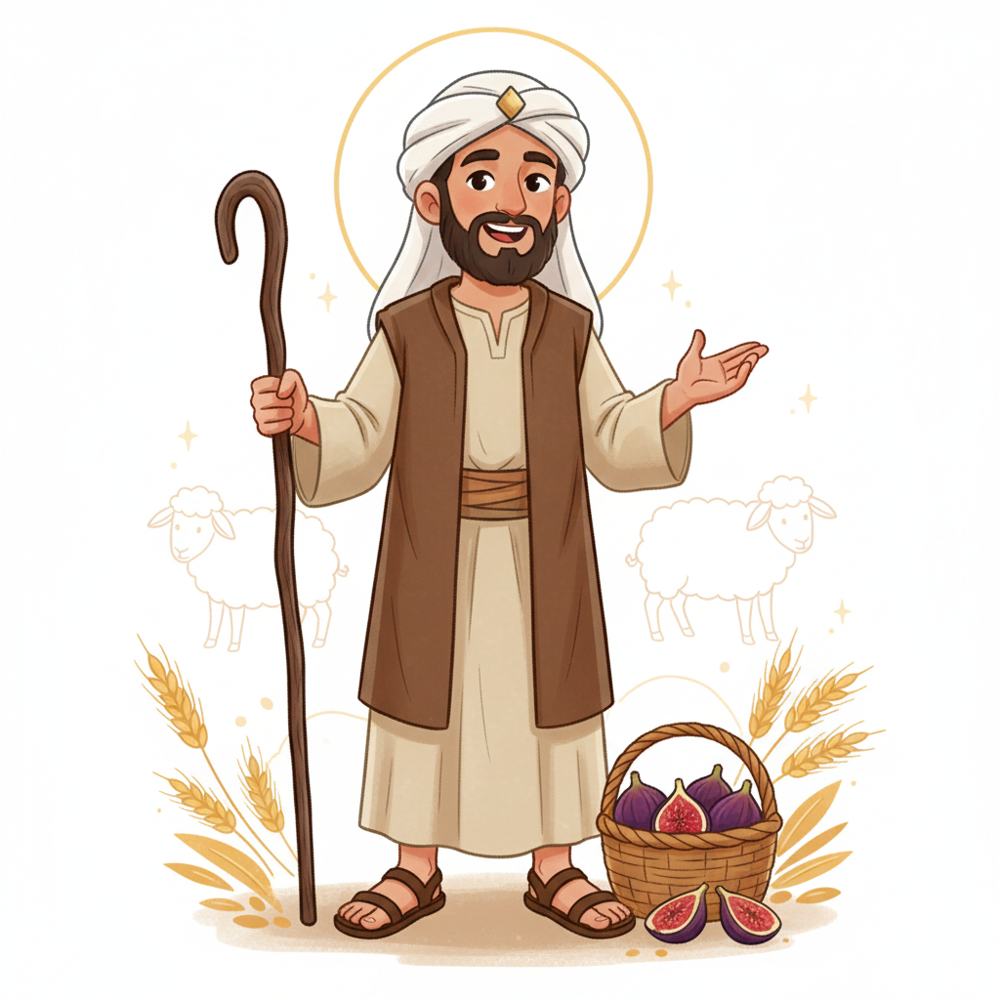
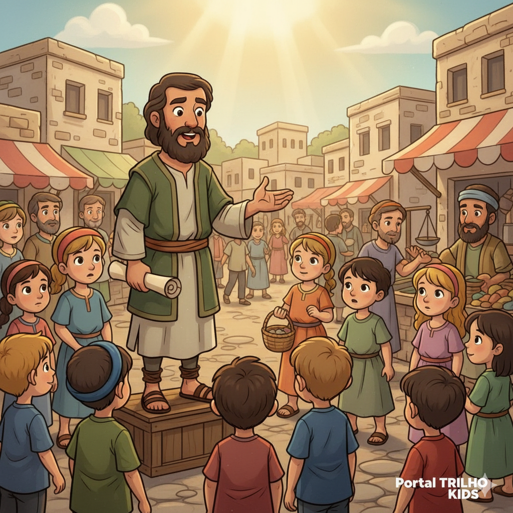
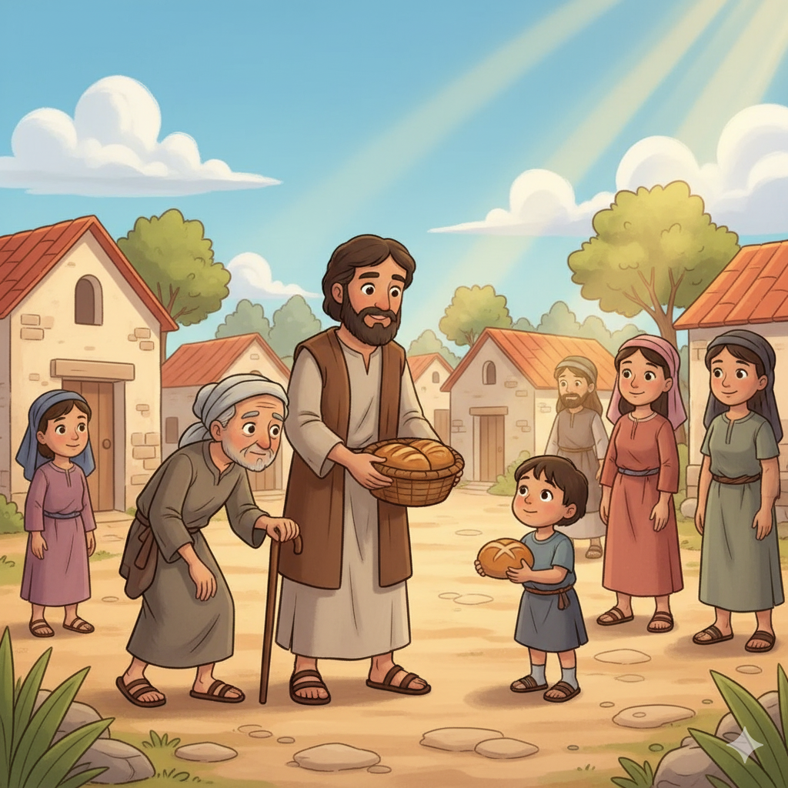
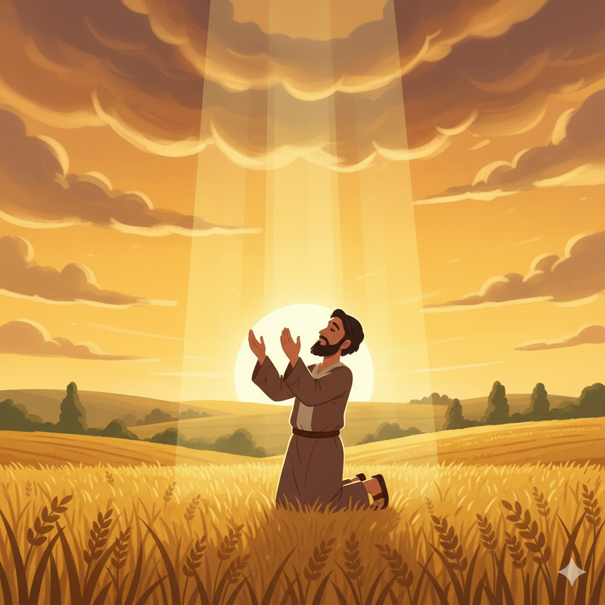
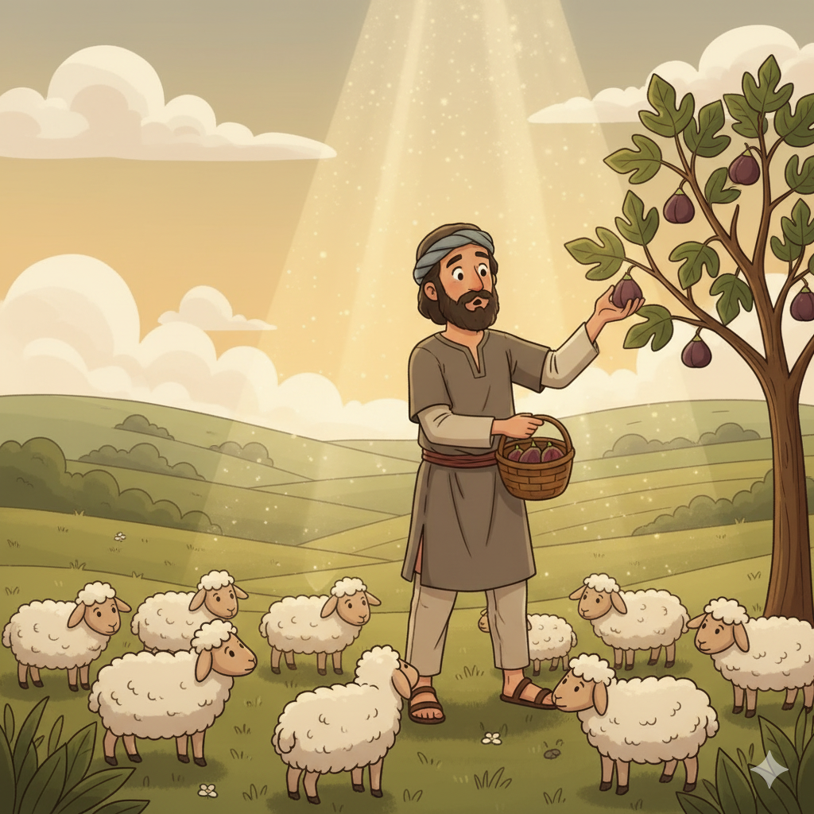

O Pastor que Clamou por Justiça — Um Resumo Visual para Crianças
Amós não era profeta, nem filho de profeta,
Cuidava de ovelhas e perfurava figos de sicômora.
Mas Deus o chamou do campo para falar Sua verdade,
Mostrando que Ele usa quem tem coração e humildade!
Não é o título, o diploma ou a posição que importa —
Deus olha para o coração e abre para você a porta!
📖 Amós 7:14-15 — "Não sou profeta... o Senhor me tomou... e me disse: Vai, profetiza ao meu povo Israel."
"Odeio, desprezo as vossas festas!" Deus declarou,
"Não aguento o cheiro dos vossos holocaustos!" Ele proclamou!
Cantar hinos enquanto os pobres são oprimidos,
É hipocrisia que enoja — os cultos são abomináveis e fingidos!
"Corra a justiça como um rio caudaloso!" foi o clamor,
Deus quer vida justa, não só ritual de louvor!
📖 Amós 5:21,24 — "Odeio, desprezo as vossas festas... Corra, porém, a justiça como as águas."
Depois de todo o juízo e toda a advertência,
Amós termina com restauração e permanência.
"Restaurarei a tenda de Davi caída no chão,
E plantarei o meu povo para sempre na minha nação!"
Mesmo após o julgamento, o amor de Deus prevalece —
Ele não destrói para acabar, mas para que tudo recomesce!
📖 Amós 9:11,14 — "Restaurarei a tenda de Davi... e plantarei Israel na sua terra."
🌊
"Corra, porém, a justiça como as águas, e a retidão como um ribeiro perene."
Amós 5:24
Este versículo foi citado por Martin Luther King Jr. em seu famoso discurso "I Have a Dream" em 1963! A palavra de Amós de 2.800 anos atrás ainda inspira pessoas a lutar pela justiça hoje.
Amós era pastor de ovelhas em Tecoa (reino de Judá) e cuidava de figueiras-sicômoro. Não era profeta profissional nem vinha de família de profetas. Mas Deus o tomou do campo e o enviou ao reino do Norte (Israel) — um "estrangeiro" falando verdades incômodas ao povo rico!
📖 Leia na Bíblia — Amós 7:14-15
"Não sou profeta, nem filho de profeta... o Senhor me tomou de detrás do rebanho e me disse: Vai, profetiza."
Israel estava no auge da prosperidade material sob o rei Jeroboão II (786–746 a.C.). As fronteiras eram amplas, o comércio florescia — mas os ricos exploravam os pobres, os juízes aceitavam subornos e o culto a Deus era pura fachada. Amós foi enviado a esse reino no pico de seu orgulho!
📖 Leia na Bíblia — Amós 6:1
"Ai dos que vivem à vontade em Sião e dos que se sentem seguros no monte de Samaria!"
Os verdadeiros "personagens" pelo qual Amós clama são os pobres e oprimidos de Israel: vendidos por uma sandália (2:6), esmagados no tribunal, explorados pelos ricos que dormiam em camas de marfim enquanto eles passavam fome. Deus viu o sofrimento deles quando ninguém mais via!
📖 Leia na Bíblia — Amós 2:6-7
"Eles vendem o justo por dinheiro e o necessitado por um par de sandálias."


📖 Leia em casa!
Amós tem 9 capítulos. Cap. 5 tem o versículo mais famoso (5:24); cap. 7–9 têm 5 visões impressionantes; cap. 9:11 foi citado por Tiago no Concílio de Jerusalém!
🌍 Parte 1 (Cap. 1–2): Julgamento das Nações
Amós começa com um truque inteligente: condena as nações vizinhas uma por uma (Síria, Filisteia, Tiro, Edom, Amom, Moabe, Judá). O povo de Israel provavelmente aplaudia cada condenação — até Amós virar o dedo para eles: "E por três transgressões de Israel, sim por quatro!"
📖 Amós 2:6 — "Eles vendem o justo por dinheiro e o necessitado por um par de sandálias."
⚖️ Parte 2 (Cap. 3–6): Os Discursos de Julgamento
Amós denuncia a hipocrisia religiosa (festas sem justiça), o luxo dos ricos sobre a miséria dos pobres, e a corrupção nos tribunais. A frase-bomba: "Odeio e desprezo as vossas festas" — Deus rejeitando o culto de quem oprime o próximo!
📖 Amós 5:21,24 — "Odeio, desprezo as vossas festas... Corra a justiça como as águas."
🌿 Parte 3 (Cap. 7–9): Cinco Visões e Esperança Final
Cinco visões proféticas (gafanhotos, fogo, prumo de construção, cesto de frutos maduros, o Senhor no altar) anunciam o juízo. Mas o livro termina de forma surpreendente: Deus promete restaurar a "tenda de Davi" e plantar seu povo — esperança mesmo após o julgamento!
📖 Amós 9:11 — "Naquele dia restaurarei a tenda de Davi que está caída." (Citado em Atos 15:16!)
Amós ensina que não podemos separar o amor a Deus do amor ao próximo. Um culto bonito com músicas e orações enquanto ignoramos os pobres e praticamos injustiça é uma abominação. Deus quer justiça na vida real, não só religião no domingo!
📖 Amós 5:21-22
"Odeio, desprezo as vossas festas... não terei prazer nos vossos holocaustos."
Amós era um pastor sem formação religiosa. Isso mostra que Deus não precisa de títulos ou diplomas — Ele chama quem tem disposição e coragem. A mensagem de Amós abalou um reino inteiro, vinda de um homem que cuidava de figos!
📖 Amós 3:8
"O leão rugiu; quem não temerá? O Senhor Deus falou; quem não profetizará?"
Amós 9:11-12 profetiza a restauração da "tenda de Davi" para que "o restante dos homens busque o Senhor, e todos os gentios". Tiago citou exatamente isso no Concílio de Jerusalém (At 15:16-17) para justificar que os gentios entrariam na Igreja!


Amós foi enviado para expor uma verdade desconfortável: a prosperidade de Israel estava sendo construída sobre a exploração dos pobres. Riqueza sem ética ofende a Deus. O livro é um alerta eterno contra enriquecer às custas dos mais fracos.
📖 Amós 8:4
"Ouvi isto, vós que atropelais o necessitado e destruís os pobres da terra."
O propósito mais profundo do livro: mostrar que Deus é um Deus de justiça que não pode ser manipulado por rituais religiosos. Ele quer coração transformado que se manifesta em vida justa, honesta e generosa com os outros.
📖 Amós 5:14
"Buscai o bem e não o mal, para que vivais; e assim o Senhor Deus dos Exércitos será convosco."
🌟 Lição Principal: Deus se importa com o que acontece fora da igreja tanto quanto dentro dela. Como você trata o povo ao seu redor — os mais fracos, os mais necessitados — é um ato de culto. Justiça é adoração!
🎤 Martin Luther King Jr. citou Amós: Em seu discurso "I Have a Dream" (1963), Martin Luther King Jr. usou Amós 5:24 — "Corra a justiça como as águas" — para inspirar o movimento pelos direitos civis. Uma palavra profética de 2.800 anos atrás ainda ressoa no mundo!
🌳 Perfurador de figos: Amós era um "boiadeiro e tratador de sicômoros" (7:14). O trabalho de "tratar" os sicômoros era perfurar cada fruto com um instrumento para que amadurecessem mais rápido. Era uma tarefa humilde e manual — desse homem saiu uma das profecias mais poderosas da Bíblia!
🏛️ Citado no Concílio de Jerusalém: Em Atos 15, quando os apóstolos debatiam se os gentios podiam entrar para a Igreja, foi Tiago quem citou Amós 9:11-12 para defender que sim! A promessa de Amós sobre a "tenda de Davi restaurada" foi a prova bíblica para incluir os não-judeus na salvação.

Amós 9:11-12 — "Restaurarei a tenda de Davi" — foi citado por Tiago em Atos 15:16-17 para defender que os gentios (não-judeus) poderiam ser salvos. Jesus, descendente de Davi, é a restauração dessa tenda: nele, todos os povos são incluídos!
A mensagem de Amós sobre justiça e amor ao próximo ressoa diretamente nas palavras de Jesus: "Amarás o teu próximo como a ti mesmo" e "O que fizestes ao menor destes... a mim o fizestes" (Mt 25:40).
Quando Jesus expulsou os vendilhões do templo, estava cumprindo o espírito de Amós: o culto sem justiça, transformado em comércio e exploração, ofende a Deus do mesmo jeito que as festas hipócritas de Israel.
Tiago cita Amós no Concílio de Jerusalém
"E com isso concordam as palavras dos profetas, como está escrito: Depois disto voltarei e reedificarei o tabernáculo de Davi... para que os restantes dos homens busquem o Senhor."
📖 Atos 15:15-17 (citando Amós 9:11-12)
Esse versículo de Amós foi a chave bíblica que abriu a porta da Igreja para todos os povos do mundo — incluindo você e eu!
Converse com sua família, turma ou professor sobre essas perguntas!
⚖️
Deus disse: "Odeio as suas festas" porque o povo oprimia os pobres. Existe algo que você faz na igreja mas não pratica no dia a dia? Como seria ser "justo" na escola, em casa, nas redes sociais?
🐑
Amós era um pastor simples, sem título nem formação religiosa. Você já achou que não era "suficiente" para Deus te usar? O que a história de Amós diz sobre o que Deus valoriza numa pessoa?
🏚️
Amós defendia os pobres que ninguém via. Quem são os "invisíveis" ao seu redor — na escola, no bairro, na sua turma? O que você poderia fazer para enxergá-los e ajudá-los como Deus enxerga?
Escolha um desafio (ou faça os três!) e seja um explorador da Bíblia!
👁️
Esta semana, preste atenção em quem está sendo ignorado ou tratado com descaso ao seu redor. Faça um gesto concreto de cuidado por essa pessoa — um sorriso, uma palavra, uma ajuda real.
✍️
Escreva "Corra a justiça como as águas, e a retidão como um ribeiro perene" e cole em algum lugar visível. Pense: como posso ser um "rio de justiça" na minha vida hoje?
📖
Leia esses versículos e depois pense honestamente: Existe alguma "festa" (rotina religiosa) na minha vida que é só por fora, sem amor por dentro? O que eu poderia mudar esta semana?
Trilho Kids | Desenvolvido com ❤️ para crianças © 2025